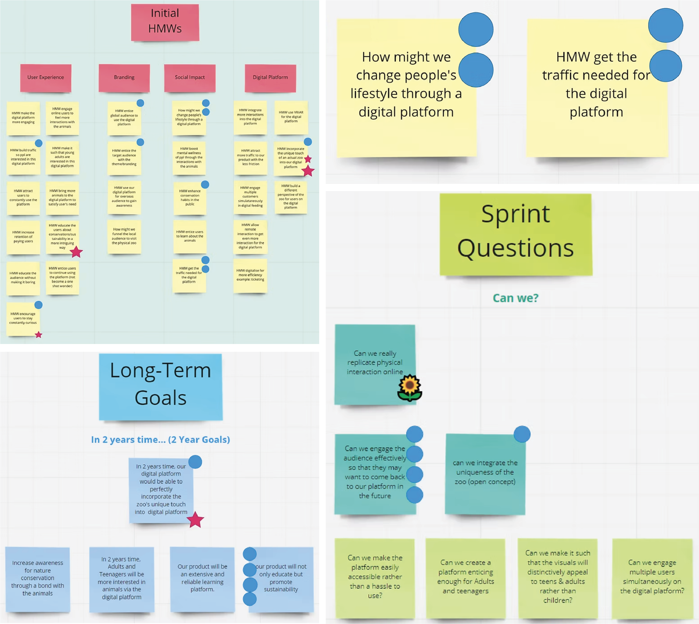
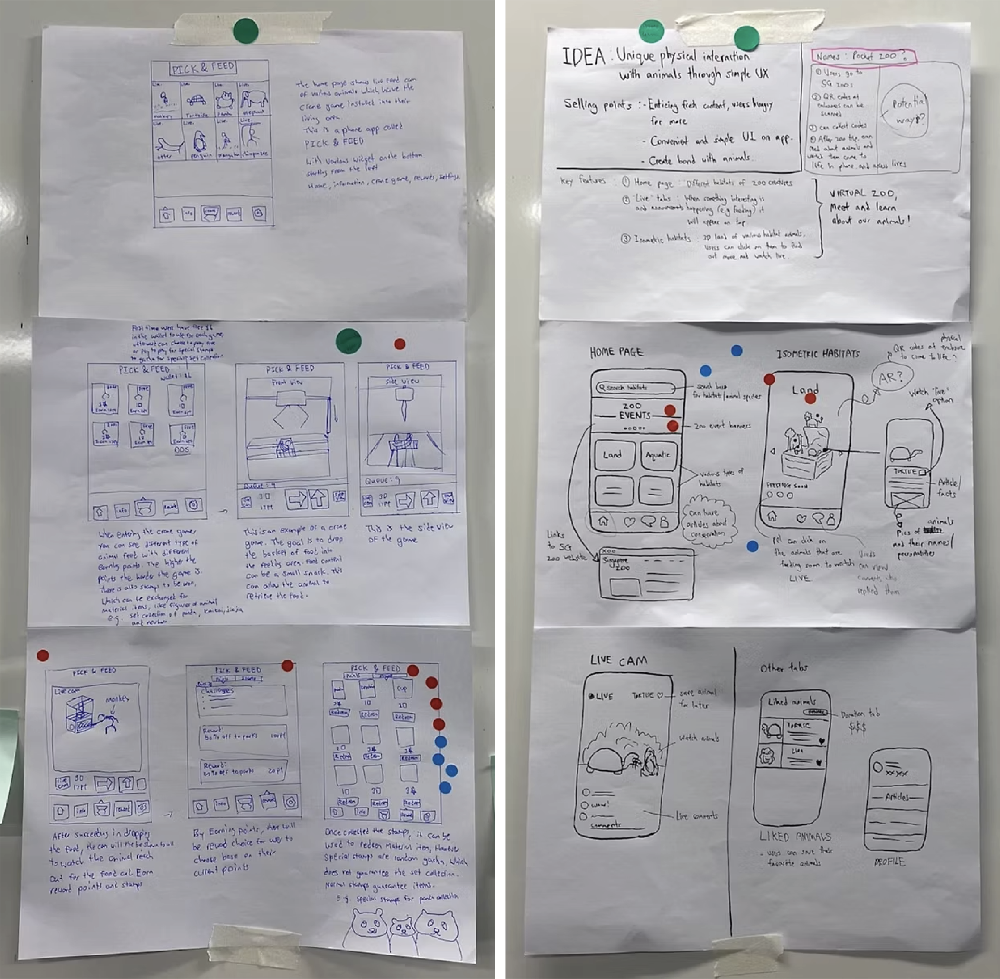

ISOZOO App
Digital App
Mandai Wildlife Reserves (Formerly WRS)
Children love to visit zoos because they can get up close and personal with their favourite animals but the visits, while regular, are not on a daily basis. MRS is looking for innovative ideas and prototypes that can allow people to experience the WRS Wildlife parks digitally. This project was done during a design sprint of 2 weeks, from the ideation to the idea pitching stage. My role in this project is the designer where I help make the product look engaging while adhering to the brand.


Isozoo App prototype
Snippets of the Design Sprint Ideation Process
Children love to visit zoos because they can get up close and personal with their favourite animals but the visits, while regular, are not on a daily basis. MRS is looking for innovative ideas and prototypes that can allow people to experience the WRS Wildlife parks digitally. This project was done during a design sprint of 2 weeks, from the ideation to the idea pitching stage. My role in this project is the designer where I help make the product look engaging while adhering to the brand.

Idea Sketching
All team members sketch our ideas and vote for the features we think is best. We then get inspired and figure out ways to build on each other's ideas to create a better app.
